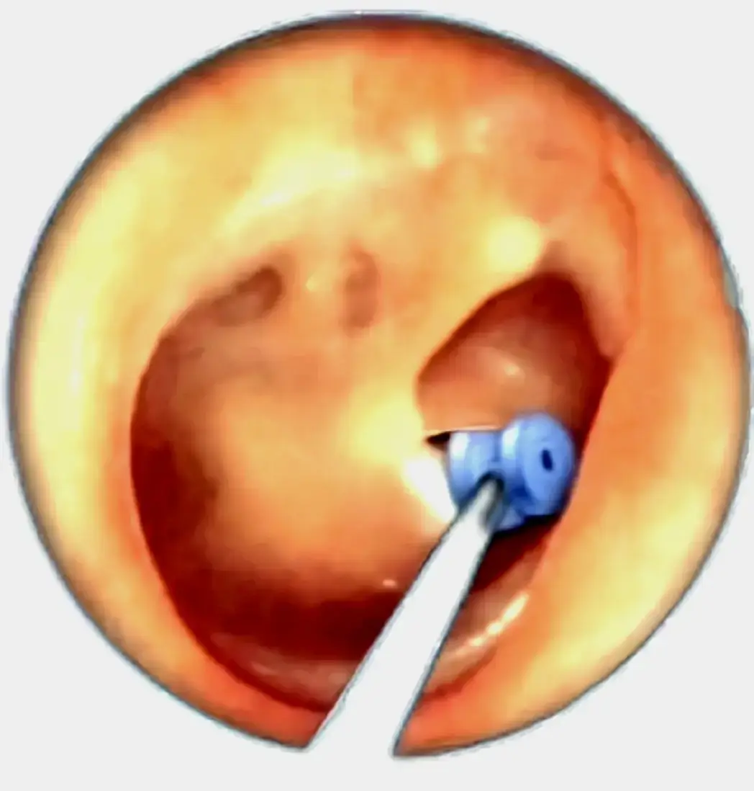

تجمع السوائل في الأذن الوسطى (الارتشاح) هو حالة شائعة خصوصًا عند الأطفال، وقد تكون مزمنة دون أعراض واضحة في بدايتها. ويحدث غالباّ نتيجة ضعف تهوية الأذن الوسطى بسبب إنسداد قناة التصريف (استاكيوس) التي تصل بين البلعوم الأنفي وتجويف الأذن الوسطى.
يعد هذا التجمع سببًا رئيسيًا لانخفاض السمع المؤقت وتأخر النطق عند الأطفال.
في مثل هذه الحالات، قد يوصي طبيب الأنف والأذن والحنجرة بإجراء زراعة أنبوب تهوية الأذن (Ear Grommet)، وهو حل جراحي بسيط وفعّال لاستعادة الوظيفة الطبيعية للأذن. في حال فشلت الطرق العلاجية البديلة..
ما الأسباب الشائعة؟
- التهابات الأذن المتكررة: تؤدي العدوى المتكررة إلى التهاب الأنسجة وزيادة إنتاج السوائل.
- انسداد قناة استاكيوس: قد يحدث انسداد نتيجة التهابات ( كالزكام )، او تضخم اللحمية البلعومية، أو أورام البلعوم الأنفي - عند الكبار خاصة - مما يمنع تصريف السوائل.
- الحساسية: يمكن أن تؤدي الحساسية إلى زيادة الإفرازات المخاطية، مما يسهم في تجمع السوائل.
- التغيرات في ضغط الهواء: التغيرات المفاجئة في الضغط مثل الطيران أو الغوص يمكن أن تؤثر على الأذن الوسطى.
- التعرض للفيروسات: بعض الفيروسات قد تسبب التهابات تؤدي إلى تجمع السوائل.
- العوامل البيئية: مثل التعرض للدخان أو التلوث يمكن أن تزيد من خطر التهابات الأذن.
- وجود مشاكل في الجهاز المناعي: ضعف الجهاز المناعي يمكن أن يزيد من احتمالية الإصابة بالتهابات
- الرضاعة بوضعية خاطئة (خصوصًا للرضع).
ما الأعراض المتوقعة؟
- ألم متكرر في الأذن: قد يشكو الطفل من ألم أو انزعاج في الأذن.
- صعوبة في السمع: .. :
-
احد العلامات التالية او أكثر:
- 1 . تلاحظه يسمعك جيداً في بعض الأحيان والبعض الآخر لا يستجيب لكلامك
- 2 . يدنو قريباً من التلفاز أو يريده بصوت أعلى مما يريده من حوله
- 3 . يطلب منك تكرار الكلام 4 . يشكوا مدرسيه من عدم التفاعل معهم كزملائه مع تدني مستواه الدراسي
- 5 . لا يستجيب لطلباتك كالعادة أو تحس أنه لا يعير الاهتمام لكلامك
- 6 . يبدأ بالتحدث بصوت أعلى من السابق
- 7. يحاول النظر لك جيداً أثناء الكلام لفهمك من حركة شفاهك
- 8 . التأخر في الكلام أو التحدث بطريقة مختلفة عن الآخرين
- 9 . يشكو من أوجاع أو ضوضاء في أذنه
- 10 . يدفع أذنه بيده للأمام عند السماع
- تكرار التهابات الأذن: تكرار حدوث التهابات الأذن الوسطى قد يكون علامة على وجود سوائل.
- صعوبة في النوم: قد يواجه الطفل صعوبة في النوم بسبب الألم أو الانزعاج في الأذن
يمكن أن تشير عدة علامات إلى وجود ارتشاح سوائل خلف طبلة الأذن عند الأطفال. من المهم مراقبة هذه العلامات للتدخل المبكر إذا لزم الأمر. تشمل العلامات الشائعة ما يلي:
كيف يتم التشخيص؟
- التاريخ الطبي: يجب جمع معلومات عن الأعراض والتاريخ الصحي للطفل، بما في ذلك أي التهابات سابقة في الأذن.
- الفحص البدني: يتضمن فحص الأذن باستخدام المنظار للكشف عن وجود سوائل أو علامات التهاب.
- اختبارات السمع: قد يتم إجراء اختبارات سمع لتحديد تأثير السوائل على قدرة الطفل على السمع.
- الأشعة: في بعض الحالات، قد يتم استخدام الأشعة السينية لاكتشاف السبب كوجود تضخم باللحمية البلعومية مثلا ..
ما هو العلاج؟
- المراقبة: في بعض الحالات، يمكن أن يُنصح بمراقبة الحالة لمدة معينة دون علاج، خاصة إذا كانت الأعراض خفيفة وضهرت لاول مرة بعد حدوث نزلة برد عند الطفل . .
- الأدوية: قد تُستخدم مسكنات الألم أو مضادات الالتهاباو بخاخات الأنف لتخفيف الأعراض وتحسين تهوية قناة استاكيوس .. في بعض الحالات، يمكن وصف المضادات الحيوية إذا كان هناك التهاب.
- العلاج الطبيعي: بعض الأطفال قد يستفيدون من العلاج الطبيعي لتحسين وضع الأذن الوسطى. كنفخ البالون بشكل متكرر ، ومضغ اللعلك ، وكذلك النفخ عبر الانف مع اقفال الفم والانف للاطفال الكبر سنا" القادرين على ذلك.
- التدخل الجراحي: إذا استمرت المشكلة لفترة طويلة أو كانت هناك نقص سمع ملحوظ ومستمر لأكثر من ٣ أشهر ، قد يحتاج الطفل إلى إجراء جراحة لوضع أنابيب تهوية في الأذن.. إضافة لإزالة اللحمية البلعومية إذا كانت متضخمة.. .
ما هو أنبوب التهوية؟

هو أنبوب صغير مصنوع من البلاستيك أو المعدن (بحجم رأس الدبوس)، يُزرع جراحيًا في طبلة الأذن لفتح ممر دائم بين الأذن الخارجية والوسطى. يعمل هذا الأنبوب على:
- تصريف السوائل المتراكمة خلف الطبلة.
- موازنة الضغط داخل الأذن الوسطى.
- منع تكرار الالتهابات.
متى نلجأ لزراعة الأنبوب
- - التهاب الأذن الوسطى المزمن مع تجمع السوائل (Glue Ear) لمدة تزيد عن ٣ أشهر.
- - تكرار التهابات الأذن الحادة (أكثر من ٤ مرات سنويًا).
- - ضعف السمع المؤثر على تطور الكلام والتعليم (خاصةً لدى الأطفال).
- - فشل العلاجات الدوائية مثل المضادات الحيوية أو البخاخات الأنفية